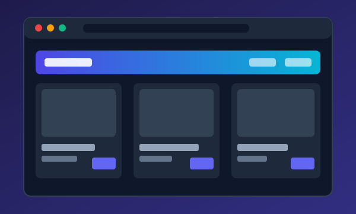

Tablero de Preventa en Power BI
Desarrollo de un modelo analítico y dashboard interactivo en Power BI utilizando Power Query y DAX. Permite el seguimiento de oportunidades comerciales por etapas, propuestas entregadas al equipo comercial, tasas de cierre y cumplimiento de plazos con indicadores KPI y SLA.
Power BI
Power Query
DAX
KPIs & SLAs
Salesforce